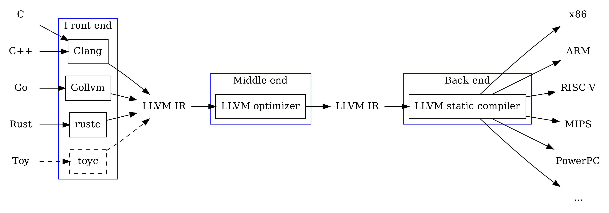

Synopsis
- Yet another smart contract compiler
- Impacts to Ethereum community
- Implementation details
- Collaboration
- Demo
EVM LLVM: What is that and why we need it
A retargetable, multiple source compiler framework

LLVM IR: at the core of LLVM ecosystem

Graph Source
- LLVM Modules are built around LLVM IR
Impacts to the Ethereum community
- More programming languages coming to Ethereum
- Rust, Golang, C/C++, OCaml ...
- More high-quality toolkits
- A future-proof toolchain
- Further optimized gas consumption
- Long term community support
- current and future EVMs
- supports from LLVM community
EVM LLVM: Engineering Details
- 256 bit support
- 256 bit support exposed to langauge frontends
- Narrower-width data types are expanded internally
- Optimizations
- Stack manipulation scheduler
- Gas consumption optimizations
EVM LLVM: Engineering Details
- Stackifier
- Converts register-based internal representation to stack opcodes
- Contract ABI generation
- Currently relies on frontend

Collaboration with Second State
end of presentation
Thank you

 Source: "MLIR Primer: A Compiler Infrastructure for the End of Moore’s Law"
Source: "MLIR Primer: A Compiler Infrastructure for the End of Moore’s Law"